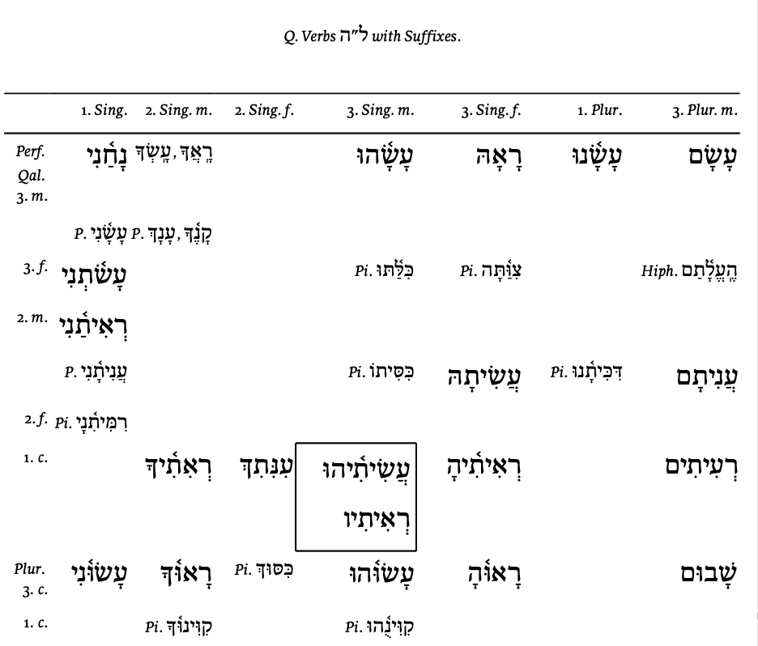

Return to the Main Resource Page
Ch. 25 Supplements
Requirements
Others
Finite Verbs with Suffixes
- Finite verbs can take pronominal suffixes. They serve as the direct object or indirect object of the verb.
- Reproducing the verbal forms with pronominal suffixes is not required.
- The suffixes are not so difficult to recognize.
- However, when a suffix is added, one or two syllables are added at the end of the verb.
- As we have learned, the primary accent of a Hebrew word can only be either on the last or the next to the last syllable.
- Consequently, we will almost always have accent shifts and vowel changes.
- This brings us back to chapter 4.
- You must be familiar with the vowel change rules (pp. 24–26 of the textbook) in order to understand and parse the verbs.
Parsing the Participles
Q & A
Where can I find paradigms of III-Hey verbs with pronominal suffixes?
- You may find it at: "Q. ל״ה Verbs with Suffixes" in Friedrich Wilhelm Gesenius, Gesenius’ Hebrew Grammar, ed. E. Kautzsch and Sir Arthur Ernest Cowley, 2d English ed. (Oxford: Clarendon Press, 1910), 530.
- This advanced grammar is often called GKC.
- Here is the paradigm:
-

- The paradigm is "imcomplete". It lists the forms that are atttested in the MT.
{kind=link}